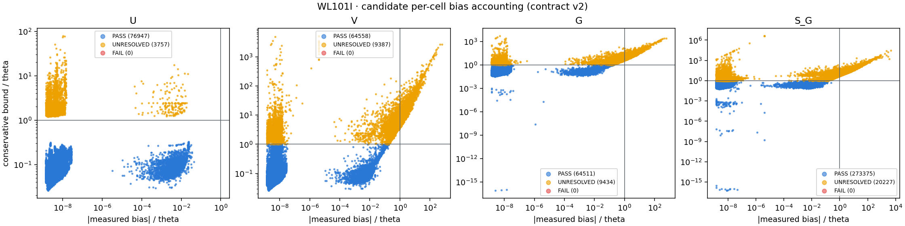

Verdict: NOT_QUALIFIED
| S1 | false |
| S2 | true |
| S3 | true |
| S5 | true |
| camera_independence | true |
| consistency | true |
| cos_normalization | true |
| discrimination | false |
| positive_control | false |
| D3_semantic_events | 0 |
| U | {"active": 80704, "pass": 76947, "fail": 0, "unresolved": 3757, "max_measured_abs_bias": 9.236357562122549e-06, "max_finite_bound": 0.012365371125425354, "dominant_bound_class_of_non_pass": {"singular": 0, "band": 0, "junction": 3757, "silhouette": 0}, "measured_bias_over_theta_by_class": {"singular": 0, "band": 0, "silhouette": 0}} |
| V | {"active": 73945, "pass": 64558, "fail": 0, "unresolved": 9387, "max_measured_abs_bias": 0.2326965668578899, "max_finite_bound": 2.7194929751971704, "dominant_bound_class_of_non_pass": {"singular": 0, "band": 265, "junction": 3425, "silhouette": 5697}, "measured_bias_over_theta_by_class": {"singular": 0, "band": 0, "silhouette": 2141}} |
| G | {"active": 73945, "pass": 64511, "fail": 0, "unresolved": 9434, "max_measured_abs_bias": 0.23389564312558145, "max_finite_bound": 2.7261320001722233, "dominant_bound_class_of_non_pass": {"singular": 0, "band": 309, "junction": 3419, "silhouette": 5706}, "measured_bias_over_theta_by_class": {"singular": 0, "band": 0, "silhouette": 2211}} |
| S_G | {"active": 293602, "pass": 273375, "fail": 0, "unresolved": 20227, "max_measured_abs_bias": 1.9819380762263896, "max_finite_bound": 6.911733232852932, "dominant_bound_class_of_non_pass": {"singular": 0, "band": 4244, "junction": 3777, "silhouette": 12206}, "measured_bias_over_theta_by_class": {"singular": 0, "band": 0, "silhouette": 8536}} |
